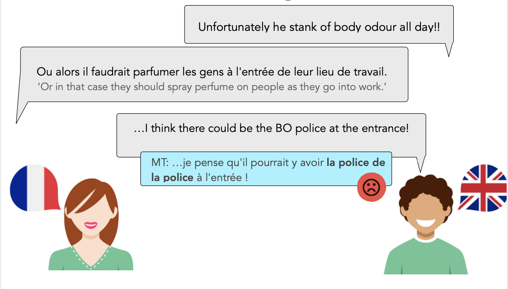
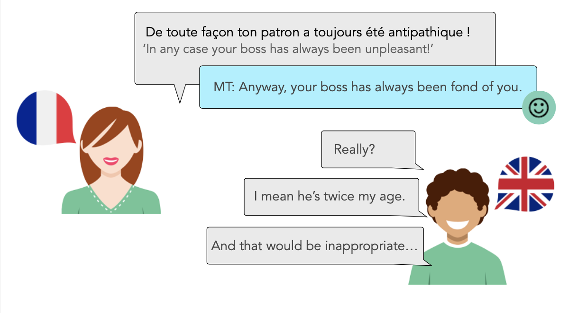

The nature of the scenario (bilingual speakers with MT-mediated dialogue) means that the dataset contains some specific features that cannot be found in many of the parallel corpora used for MT (those that are monolingual texts that have been translated into the other language).
Meta-conversations and negotiating errors are one example of this. Although the MT systems were generally of good quality, there were times when translation errors led to confusion. Even with the progress made in MT, this is a scenario that is very likely to continue occurring (due to the use of specific vocabulary, spelling errors, non-standard use of language, etc.).
Some examples of request for clarification:
It is important that clarifications get correctly translated. Otherwise it could lead to a breakdown in communication. It is also important that when an alternative formlation is suggested (e.g. I presume you mean lanes) that the original user understands that there has been an error and that this is a reformulation.
Citing wrong translations:
These examples are potentially problematic for translation, even from a theoretical point of view. How should they be translated? The original user does not know that there has been an error in translation. If the citation of the wrong translation is correctly translated back into the original language, then the original user may not see that the misunderstanding is due to a translation error. However, if the citation is poorly translated, then there could be further breakdowns in communication. It seems that the best option would be to have meta-information indicating when there has been a translation error to avoid such problems.
Another consequence of bilinguality is that in some cases, ambiguity in translation led to requests for clarification that were very language-specific.
In this example, the French speaker corrects themself in the second utterance by making it clear that the next patient is female (patiente) rather than male or unspecified gender (patient) used in the first utterance. Since English does not make such gender distinctions, the translation of both patiente and patient is English patient, which would result in a nonsensical sequence of sentences in English. Adding the words male and female in front of patient is an option, but this would only be know after the second utterance has been sent, since it would be inappropriate to assume that French patient is male in the general setting.
Language ambiguities sometimes hold across languages (e.g. English crane ('bird', 'machine') and French grue (bird, machine)), but this it not always the case. In this example, the English speaker mentions ice-cream, which translates into French glace. Glace is ambiguous in French, meaning either 'ice-cream' or 'mirror'. The French participant therefore asks for a clarification about which the English speaker originally meant, resulting in a confusing conversation for the English speaker, for whom the ambiguity did not exist. The confusion also arose in this scenario due to a slightly odd translation of the original utterance (penser à une glace rather than penser à de la glace).
While some errors are very easy to spot, others can go undetected, potentially leading to quite serious problems.
The following is an example of an omission in translation (police rather than BO police), resulting in a translation that is far less humorous than the original sentence.
And while the above example got detected as being a poor translation (although maybe not for the real reason), other errors (including those resulting in the complete opposite meaning) can go completely undetected, as long as they are fluent and grammatical, which could lead to some more serious and far-reaching problems:
